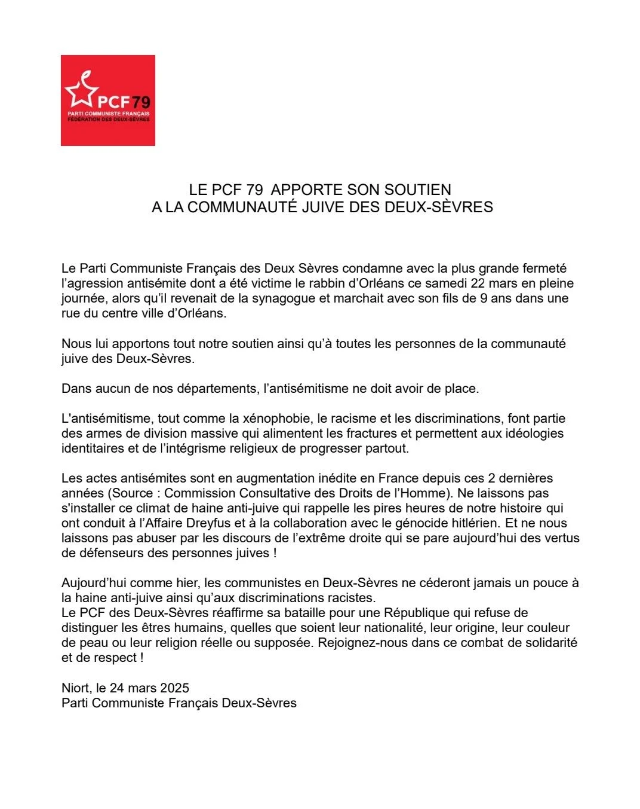

Communiqué du PCF 79
Notre soutien à la communauté juive des Deux-Sèvres après l’agression du rabbin d’Orléans
Date indiquée par Facebook · 24 mars 2025
Repères éditoriaux
Nous avons condamné l’agression antisémite du rabbin d’Orléans et exprimé notre solidarité avec les personnes de la communauté juive des Deux-Sèvres. Notre déclaration du 24 mars 2025 figure dans le document joint.
Texte conservé avec la publication
Après l'acte antisémite odieux perpétré à Orléans contre un rabbin, ci-dessoud le communiqué de la Fédération des Deux-Sèvres du PCF adressé ce jour à la presse locale et régionale.

Sources
Archive rouge · export Facebook · AR-0002-FB-01162
À lire aussi · Notre soutien à la communauté musulmane des Deux-Sèvres après le meurtre d’Aboubacar Cissé